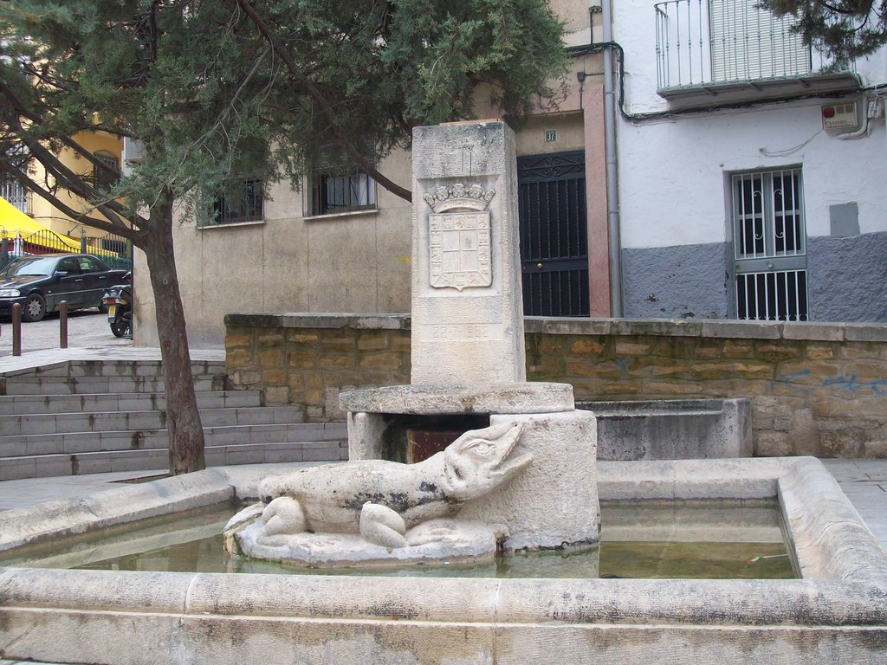

La Leyenda del Lagarto de la Malena (o Lagarto de la Magdalena, o simplemente Lagarto de Jaén) es la más famosa de la capital jiennense. La influencia de esta leyenda es tal, que el lagarto ha llegado a convertirse en uno de los símbolos de la ciudad, estando presente en su arquitectura (en el barrio de la Magdalena hay una estatua del lagarto en la fuente junto a la que se supone que habitaba, obra de Damián Rodríguez Callejón), en sus cabalgatas, en sus conciertos (el famoso festival Lagarto Rock), en sus dichos populares y hay quien dice que hasta en la forma de la ciudad, semejante a la de un lagarto, debido a la forma enroscada en torno al cerro de Santa Catalina. Lo cierto es que la tradición de que la ciudad tiene forma de Dragón (en realidad el "Lagarto de Jaén" es, según las crónicas antiguas y la propia leyenda, una gran Sierpe o Dragón), cuenta con una antigüedad considerable pues, incluso, en el escudo de la Catedral de Jaén se duda si la figura del Dragón simboliza el mal o la propia ciudad de Jaén, simbolizada por un monte circundado de murallas y sobre el mismo una Virgen con el Niño Jesús en sus brazos.
Ya en el siglo XVI se escribió, y así figura en escrito anónimo custodiado en la Biblioteca Nacional, que Jaén tenía las funciones vitales distribuidas al igual que el cuerpo de un dragón.
Parte de la fama de la leyenda fuera de la provincia de Jaén —principalmente en Granada, Ciudad Real, Albacete y Almería— le viene por el uso de la expresión "Así revientes como el lagarto Jaén", utilizada para maldecir. En la ciudad de Jaén es más común el uso de "reventar como el lagarto la Malena", pues el barrio y la leyenda son conocidos y es tanto una maldición como un dicho tradicional cuando alguien come en exceso, a modo de una advertencia.
Un preso condenado a muerte solicitó su libertad a cambio de matar al lagarto. Tal era la desesperación de los vecinos que se le concedió la oportunidad de intentarlo. Para ello, solicitó un caballo, un costal de panes calientes y un saco con pólvora. Por la noche, el preso se presentó junto a la cueva y fue dejando una hilera de panes. El animal se despertó y se los fue comiendo tras el preso, que continuaba lanzando panes mientras huía a caballo. Al llegar a la plaza de San Ildefonso, en lugar de un pan le lanzó el saco de pólvora, que el animal devoró del mismo modo y, acto seguido, explotó.
Según estudiosos del tema como Alfredo Cazabán y Juan Eslava Galán, esta versión es la más verosímil de las tres, ya que en la Iglesia de San Ildefonso durante mucho tiempo se expuso una piel de reptil, seguramente de un caimán, sobre la que más tarde se pintó un retrato de San Cristóbal con el niño Jesús a hombros.
Un pastor, harto de que el lagarto se comiera a sus ovejas, ideó una treta para acabar con el lagarto. Tomó a una de sus ovejas y la mató, sacándole parte de la carne y rellenando el pellejo con yesca encendida. El reptil, al oler el cordero ensangrentado, lo engulló y murió al abrasarle la yesca las entrañas.
Esta versión es la más representada y popular. Sin embargo, a veces se mezcla con la primera, cambiando la yesca por pólvora, o al contrario, insertando el detalle de la piel del cordero en la versión del preso. En cualquier caso, estas dos últimas versiones conviven en la sabiduría popular y alimentan el dicho de reventar como el lagarto de Jaén.
Los vecinos fueron a pedir ayuda a un guerrero, que se atavió para la ocasión con una armadura hecha de espejos relucientes. Al acercarse al lagarto , el Sol reflejado en los cristales cegó al lagarto. El caballero aprovechó ese momento para atravesar al monstruo con su espada. Tal fue la fuerza con la que atravesó al animal que tropezó con una de las piedras del sendero cayendo por uno de los terraplenes cercanos a él.